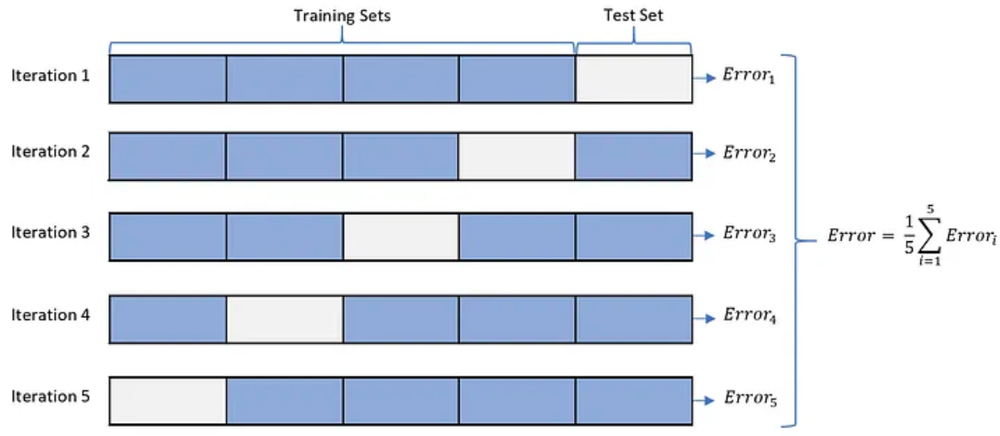
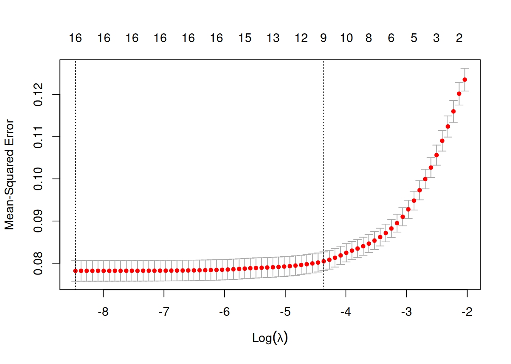

Show the code
library(glmnet) # cv.glmnet() and glmnet()
library(ISLR2) # Wage data set
Wage <- ISLR2::Wage
# From names(Wage), I want to remove "region" and "wage"
Wage <- Wage[, -c(6, 11)]The MSE is defined as: \[ MSE(\underline\beta) = \frac{1}{n}\sum_{i=1}^n\left(y_i-\beta_0-\sum_{j=1}^p\beta_jx_{ij}\right)^2 \] This is the Maximum Likelihood Estimate, which seeks to model the mean of \(Y\) at each value of \(X\), \(E(Y) = X\underline\beta\), with Gaussian errors.
MSE, seen as a function of \(\underline\beta\), is a loss function, i.e. the function we minimize to find our estimates.
But it’s FAR from the only loss function.
By minimizing \[ MAE(\underline\beta) = \frac{1}{n}\sum_{i=1}^n\left|y_i-\beta_0-\sum_{j=1}^p\beta_jx_{ij}\right| \] we end up estimating the \(median\) of \(Y\).
Others:
Ordinary least squares is a minimization problem: \[ RSS = \sum_{i=1}^n\left(y_i-\beta_0-\sum_{j=1}^p\beta_jx_{ij}\right)^2 \]
What if I don’t like how big the \(\underline\beta\) values are?
Let’s arbitrarily say that \(\sum_{j=1}^p \beta_j = 10\).
With this constraint, one large \(\beta_j\) can be countered by a large negative \(\beta_k\).
The \(L_p\)-norm of a vector is: \[ ||\beta||_p = \left(\sum_{j=1}^p|\beta|^p\right)^{1/p} \]
Or, in general, why choose a particular value of \(s\) in \(||\underline\beta||_p = s\)?
There’s no good reason to choose a particular value of \(s\), but regularizing stops us from having steep slopes for predictors that aren’t actually related.
In other words, we ignore spurious patterns!
Too little regularization and we just have the OLS estimate. Too much regularization and we restrict the parameters too much.
For a linear model, restricting the values with \(||\underline\beta||_p = s\) reduces flexibility, which can improve out-of-sample prediction performance.
… therefore constrained estimates are biased.
What a great question! Thank you so much for asking! You must be smart.
For \(||\underline\beta||_p\) to make sense, the predictors must all have the same scale.
This is accomplished by standardizing the features: Replace each \(x_{ij}\) with \[ \frac{x_{ij} - \bar{\mathbf{x}_{j}}}{\frac{1}{n}\sum_{i=1}^n(x_{ij} - \bar{\mathbf{x}_{j}})^2} \]
Choose the lambda with the lowest out-of-sample prediction error.

So far, we’ve been talking about general \(L_p\) norms, i.e. \(||\underline\beta||_p\).

Wikipedia screenshot:

Minimize \(MSE(\underline\beta)\) subject to \(||\underline\beta||_p\).
is equivalent to
Minimize \(MSE(\underline\beta) + \lambda||\underline\beta||_p\)
For the rest of your life, this is the way you’ll see Ridge and LASSO.
With the existence of LASSO, there’s no reason to do automated feature selection.
Best subset selection can be written as: \[ \text{Minimize } MSE(\underline\beta)\text{ subject to }\sum_{j=1}^pI(\beta\ne 0) \le s \] This can minimize out-of-sample error, but results in something that could be mistaken for inference.
With LASSO, you know the estimates are biased and you know why. Best subset tricks you into thinking your \(\underline\beta\) estimates are accurate - they are not.
glmnetglm in glmnet is because it fits all GLMs.
family = binomial argument works as in glm()
family = "binomial" is an optimized version.net in glmnet refers to elasticnet.
\[ \text{Minimize } MSE(\underline\beta) + \lambda\left[\alpha||\underline\beta||_1 + (1-\alpha)||\underline\beta||_2\right] \]
Elastic Net is “doubly regularized”.
Elastic net needs more time to fit and needs more data.
\[ \text{Minimize } MSE(\underline\beta) + \lambda\left[\alpha||\underline\beta||_1 + (1-\alpha)||\underline\beta||_2\right] \]
Here’s an example of LASSO in R. We’ll load in the Wage data from ISLR2 package1.
This data set has a column for wage and a column for logwage. We’re going to use wage as our response, and removing wage makes it easier to tell R to use all columns other than logwage. I also remove region since there are some regions with too few observations and I am not going to set up cross-validation appropriately for this scenario.
library(glmnet) # cv.glmnet() and glmnet()
library(ISLR2) # Wage data set
Wage <- ISLR2::Wage
# From names(Wage), I want to remove "region" and "wage"
Wage <- Wage[, -c(6, 11)]glmnet doesn’t use the formula notation (y ~ x); we have to manually set up the design matrix (including dummy variables) and the response vector.
X <- model.matrix(logwage ~ ., data = Wage)[,-1]
y <- as.numeric(Wage$logwage)The first step to fitting a LASSO model is choosing \(\lambda\) via cv. The cv.glmnet() function does this for us. The results are not a final model; the resultant object gives us an idea of which value of \(\lambda\) is appropriate.
cv_check <- cv.glmnet(x = X, y = y, alpha = 1)
plot(cv_check)
The first dotted line indicates the value of \(\lambda\) that minimizes the “loss function.” However, across different samples we would get different values of \(\lambda\). Because we know there’s randomness, we know that a slightly larger (more restrictive) value of \(\lambda\) would also be consistent with our data. Since cross-validation emulates the idea of having many samples, we can get an estimate of the standard error of \(\lambda\). We can then choose the value of \(\lambda\) that is within 1 standard error of the minimum. This gives a much simpler model while still having a plausible \(\lambda\).2
Now that we have a way of telling R what value we want for lambda, we can fit the model.
my_lasso <- glmnet(X, y, lambda = cv_check$lambda.1se)
my_lasso
Call: glmnet(x = X, y = y, lambda = cv_check$lambda.1se)
Df %Dev Lambda
1 9 35.59 0.0127The output isn’t very informative, but the model can make predictions via the predict() function and these will be comparable or better than the predictions from an unconstrained linear model.
Let’s compare the coefficient values to see the shrinkage in action! Of course, glmnet standardizes by default, so we need to ensure that the linear model is based on standardized predictors.
In the output, I include a column for the difference in the coefficients. Specifically, it’s lm minus lasso, so we may expect “shrinkage” to mean that the lasso estimates are smaller.
standardized_X <- apply(X, 2, scale)
standardized_lm <- lm(y ~ standardized_X)
coef_mat <- cbind(coef(my_lasso),
coef(standardized_lm))
res <- cbind(
coef_mat,
apply(coef_mat, 1, function(x) abs(x[2]) - abs(x[1]))
) |>
round(3)
colnames(res) <- c("lasso", "lm", "|lm|-|lasso|")
res17 x 3 sparse Matrix of class "dgCMatrix"
lasso lm |lm|-|lasso|
(Intercept) -7.830 4.654 -3.176
year 0.006 0.026 0.019
age 0.002 0.029 0.027
maritl2. Married 0.128 0.076 -0.052
maritl3. Widowed . 0.004 0.004
maritl4. Divorced . 0.012 0.012
maritl5. Separated . 0.017 0.017
race2. Black . -0.012 0.012
race3. Asian . -0.005 0.005
race4. Other . -0.007 0.007
education2. HS Grad . 0.038 0.038
education3. Some College 0.058 0.075 0.018
education4. College Grad 0.166 0.119 -0.047
education5. Advanced Degree 0.313 0.151 -0.162
jobclass2. Information 0.017 0.013 -0.004
health2. >=Very Good 0.041 0.027 -0.014
health_ins2. No -0.189 -0.089 -0.100The estimates aren’t all smaller! Lasso chose to set some to 0, which freed up some coefficient “budget” to spend elsewhere.
ISLR stands for Introduction to Statistical Learning with R, a fantastic (and free) book if you want to learn more advanced topics in predictive modelling!↩︎
This is similar to the Box-Cox transformation, where we find a bunch of plausible transformations, and go with a simple one like \log() or sqrt().↩︎